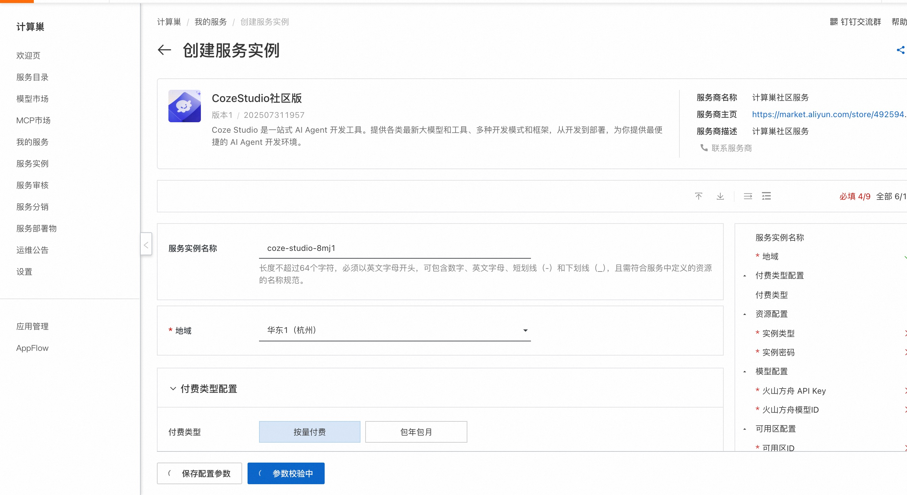
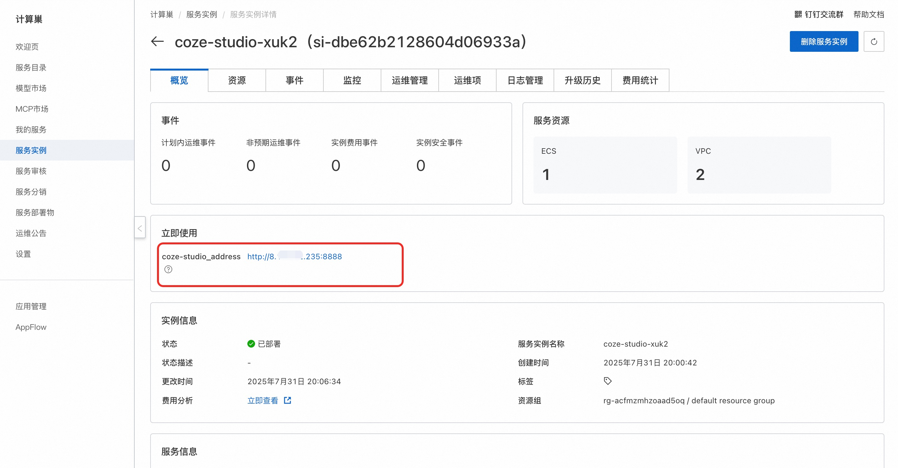
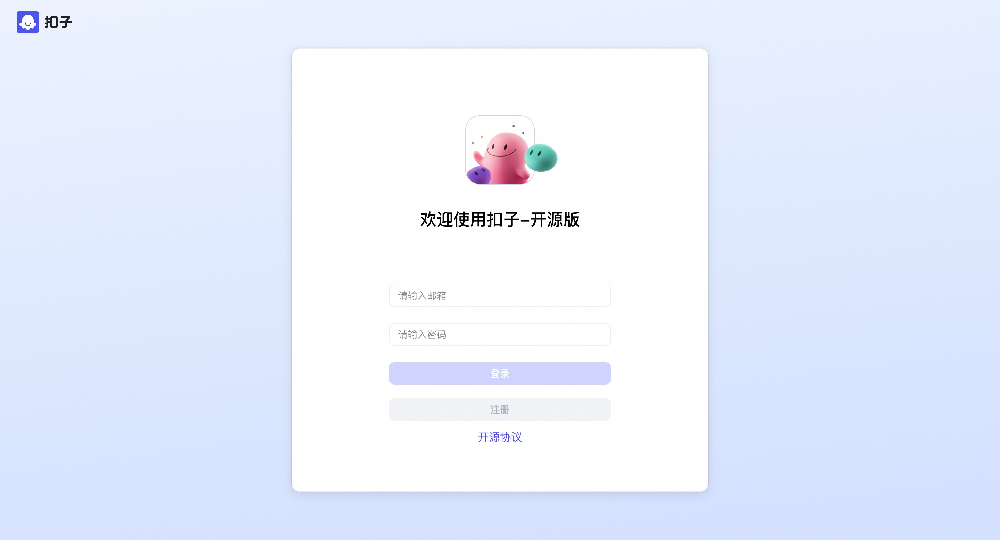

🌟 服务简介
Coze Studio 是一站式 AI Agent 开发工具。提供各类最新大模型和工具、多种开发模式和框架，从开发到部署，为你提供最便捷的 AI Agent 开发环境。
提供 AI Agent 开发所需的全部核心技术：Prompt、RAG、Plugin、Workflow，使得开发者可以聚焦创造 AI 核心价值。 开箱即用，用最低的成本开发最专业的 AI Agent：Coze Studio 为开发者提供了健全的应用模板和编排框架，你可以基于它们快速构建各种 AI Agent ，将创意变为现实。 Coze Studio，源自服务了上万家企业、数百万开发者的「扣子开发平台」，我们将它的核心引擎完全开放。它是一个一站式的 AI Agent 可视化开发工具，让 AI Agent 的创建、调试和部署变得前所未有的简单。通过 Coze Studio 提供的可视化设计与编排工具，开发者可以通过零代码或低代码的方式，快速打造和调试智能体、应用和工作流，实现强大的 AI 应用开发和更多定制化业务逻辑，是构建低代码 AI 产品的理想选择。Coze Studio 致力于降低 AI Agent 开发与应用门槛，鼓励社区共建和分享交流，助你在 AI 领域进行更深层次的探索与实践。
Coze Studio 的后端采用 Golang 开发，前端使用 React + TypeScript，整体基于微服务架构并遵循领域驱动设计（DDD）原则构建。为开发者提供一个高性能、高扩展性、易于二次开发的底层框架，助力开发者应对复杂的业务需求。
功能清单
| 功能模块 | 功能点 |
|---|---|
| 模型服务 | 管理模型列表，可接入OpenAI、火山方舟 等在线或离线模型服务 |
| 搭建智能体 | * 编排、发布、管理智能体 * 支持配置工作流、知识库等资源 |
| 搭建应用 | * 创建、发布应用 * 通过工作流搭建业务逻辑 |
| 搭建工作流 | 创建、修改、发布、删除工作流 |
| 开发资源 | 支持创建并管理以下资源： * 插件 * 知识库 * 数据库 * 提示词 |
| API 与 SDK | * 创建会话、发起对话等 OpenAPI * 通过 Chat SDK 将智能体或应用集成到自己的应用 |
💰 计费说明
CozeStudio社区版在计算巢部署的费用主要涉及：
- 所选vCPU与内存规格
- 系统盘类型及容量
- 公网带宽
🚀 部署流程
-
访问计算巢CozeStudio社区版部署链接 ，按提示填写部署参数： 
-
参数填写完成后可以看到对应询价明细，确认参数后点击下一步：确认订单。
-
确认订单完成后同意服务协议并点击立即创建进入部署阶段。
-
等待部署完成后就可以开始使用服务，进入服务实例详情点击服务地址。 
-
访问服务地址注册账号并使用CozeStudio社区版。 
📚 使用指南
更多用法请参考CozeStudio官网文档。